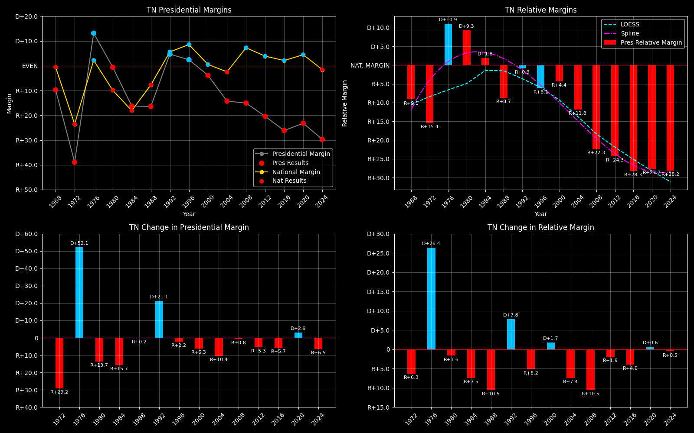

← Back to Map

Tennessee (TN) statewide
Tennessee (TN) — Data
| Year | EVs | D | R | Margin | Rel. Margin | Nat. Margin | Margin Δ | Rel. Margin Δ | Nat. Margin Δ | Other votes | Total votes |
|---|
| 1968 | 11 | 351,233(28.1%) | 472,592(37.8%) | R+14.7 | R+14.1 | R+0.7 | | | | 424,792(34.0%) | 1,248,617 |
| 1972 | 10 | 357,293(30.5%) | 813,147(69.5%) | R+38.9 | R+15.4 | R+23.6 | R+24.2 | R+1.3 | R+22.9 | 0(0.0%) | 1,170,440 |
| 1976 | 10 | 825,877(56.6%) | 633,969(43.4%) | D+13.1 | D+10.9 | D+2.2 | D+52.1 | D+26.3 | D+25.8 | 0(0.0%) | 1,459,846 |
| 1980 | 10 | 783,101(48.3%) | 792,756(48.9%) | R+0.6 | D+10.0 | R+10.6 | R+13.8 | R+0.9 | R+12.8 | 46,804(2.9%) | 1,622,661 |
| 1984 | 11 | 711,714(41.6%) | 990,212(57.8%) | R+16.4 | D+1.8 | R+18.1 | R+15.8 | R+8.3 | R+7.5 | 10,068(0.6%) | 1,711,994 |
| 1988 | 11 | 679,794(41.8%) | 947,233(58.2%) | R+16.4 | R+8.7 | R+7.8 | R+0.1 | R+10.4 | D+10.4 | 0(0.0%) | 1,627,027 |
| 1992 | 11 | 933,521(47.3%) | 841,300(42.6%) | D+5.2 | R+1.7 | D+6.9 | D+21.6 | D+7.0 | D+14.7 | 199,968(10.1%) | 1,974,789 |
| 1996 | 11 | 909,146(48.4%) | 863,530(46.0%) | D+2.6 | R+6.9 | D+9.5 | R+2.6 | R+5.2 | D+2.6 | 105,918(5.6%) | 1,878,594 |
| 2000 | 11 | 981,721(47.3%) | 1,061,949(51.2%) | R+3.9 | R+4.5 | D+0.5 | R+6.5 | D+2.4 | R+8.9 | 29,941(1.4%) | 2,073,611 |
| 2004 | 11 | 1,036,474(42.5%) | 1,384,379(56.8%) | R+14.4 | R+11.9 | R+2.5 | R+10.4 | R+7.4 | R+3.0 | 16,428(0.7%) | 2,437,281 |
| 2008 | 11 | 1,087,437(41.8%) | 1,479,179(56.9%) | R+15.3 | R+22.6 | D+7.4 | R+0.9 | R+10.7 | D+9.8 | 33,133(1.3%) | 2,599,749 |
| 2012 | 11 | 960,709(39.1%) | 1,462,330(59.5%) | R+20.7 | R+24.6 | D+3.9 | R+5.4 | R+2.0 | R+3.4 | 35,538(1.4%) | 2,458,577 |
| 2016 | 11 | 870,695(34.9%) | 1,522,926(61.1%) | R+27.2 | R+29.5 | D+2.2 | R+6.5 | R+4.8 | R+1.7 | 100,616(4.0%) | 2,494,237 |
| 2020 | 11 | 1,143,506(37.5%) | 1,851,770(60.7%) | R+23.6 | R+28.2 | D+4.5 | D+3.6 | D+1.3 | D+2.3 | 56,821(1.9%) | 3,052,097 |
| 2024 | 11 | 1,056,265(34.5%) | 1,966,865(64.2%) | R+30.1 | R+28.5 | R+1.6 | R+6.5 | R+0.4 | R+6.1 | 40,812(1.3%) | 3,063,942 |
Column explanations
- Year
- Election year.
- EVs
- Number of electoral votes allocated to this state or unit.
- D
- Number of votes for the Democratic candidate (raw count).
- R
- Number of votes for the Republican candidate (raw count).
- Margin
- Margin between the two major-party candidates ((D - R)/(D + R)).
- Rel. Margin
- The presidential margin relative to the national presidential margin (Margin - Nat. Margin).
- Nat. Margin
- The national presidential margin for that year ((D_total - R_total)/(D_total + R_total)).
- Δ
- Change (delta) in the value from the previous election year. Blank if no data for previous year.
- Other votes
- Number of votes for third-party (other) candidates (raw count).
- Total votes
- Total voter turnout or ballots cast (when provided).